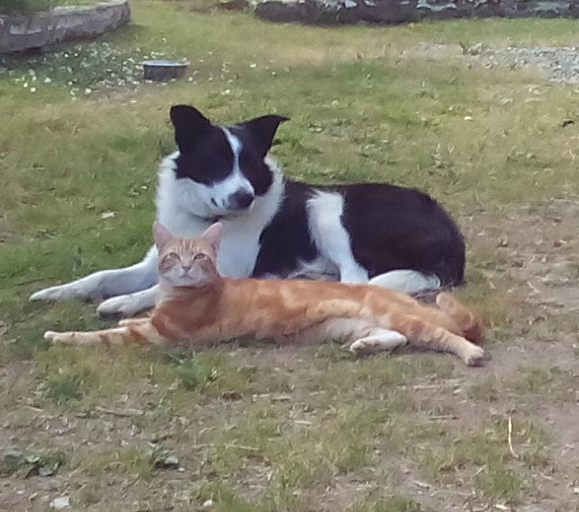
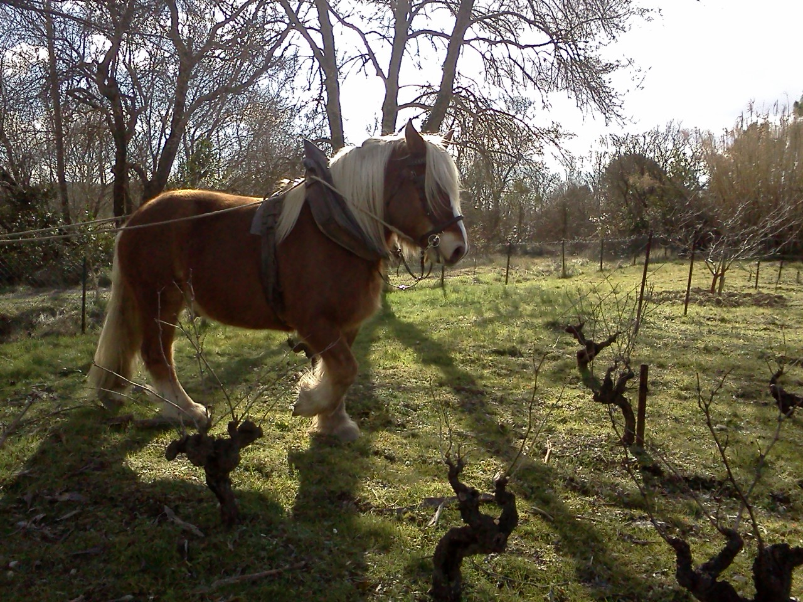
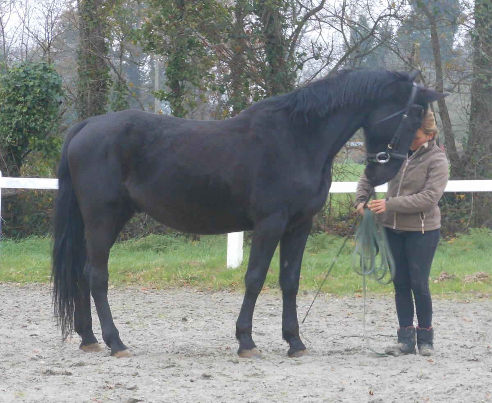

Comportementaliste animalier
 Formée en éthologie du chien, du cheval et du chat, en santé animale et en sciences humaines, avec plus de 30 ans d'expérience avec les chiens et les chevaux, je mets mes compétences à votre disposition pour vous assurer un service de qualité en vous proposant des méthodes efficaces, douces et faciles à mettre en œuvre. Les solutions que je vous apporte tiennent compte de votre mode de vie, de vos besoins et s'adaptent à votre personnalité. Le respect de l’animal et votre bien être sont au cœur de mes préoccupations.
En tant que comportementaliste animalier j'interviens chez vous pour vous aider à modifier certains comportements de votre chien ou de votre cheval. Le changement de comportement est visible en général, dès la première séance.
CHEZ LE CHIEN

Les comportements indésirables que vous rencontrez avec votre chien et pour lesquels je suis en capacité de vous aider sont :
L'agitation :
Votre chien vous saute dessus et sur les personnes de votre entourage, vous mordille fréquemment, il est difficile à canaliser, se repose rarement en votre présence. Il aboie souvent pour des raisons que vous jugez inutiles.Syndrome hyperactivité/hypersensibilité
Votre chien bouge très souvent, il a des problèmes de sommeil, il vous est difficile d'attirer son attention et il ne maîtrise pas sa morsure. Il peut être agressif avec les autres chiens.L'anxiété de séparation :
En votre absence, votre chien fait des dégâts, aboie ou hurle sans cesse.Marquage excessif :
Votre chien urine et/ou défèque fréquemment dans votre maison au delà de 5 à 6 mois, ou lorsque que vous vous absentez quelques minutes malgré l'avoir sorti en promenade avant.L'entente avec d'autres animaux :
Votre chien mène la vie dure à votre chat, ou il devient ingérable lorsque vous êtes en contact avec d'autres animaux.L'agressivité :
Votre chien est agressif envers ses congénères ou envers vous et/ou votre entourage. S'il vous a mordu ou s'il a mordu une tierce personne, le suivi que je vous propose doit être complété par une évaluation comportementale chez un vétérinaire comportementaliste.Les peurs :
Votre chien est craintif, il peut parfois aboyer de manière agressive sur des personnes, des voitures, des objets, joggeurs, cyclistes, chevaux... Il a tendance à se cacher lorsque vous accueillez des personnes chez vous, vous rencontrez des difficultés à le sortir de chez vous.Syndrome de privation sensorielle :
Votre chien est phobique à toutes nouvelles stimulations. Il vous est impossible de le sortir de chez vous. Vous pouvez même rencontrer des difficultés à l'approcher. Ce syndrome est souvent lié aux conditions d'élevage et il peut parfois être long à rétablir. Je vous aide en vous donnant les méthodes pour le désensibiliser afin d'obtenir un chien apaisé.CHEZ LE CHEVAL
Le travail du comportementaliste équin consiste à vous accompagner vers une relation complice et fusionnelle avec votre cheval. Je vous accompagne essentiellement pour réaliser un travail de désensibilisation tel que l’atténuation des comportements craintifs (ports du filet, selle; peur des éléments extérieurs de toute sorte, crainte du cavalier).
Les deux exemples suivants illustrent le type d’intervention que je vous propose :
 Rééducation d'un comtois au travail du sol. Ce gros loulou atteint d'une maladie congénitale le rendant progressivement aveugle était devenu extrêmement peureux au contact des branches, avait des difficultés pour se situer dans l'espace et devenait dangereux pour sa propriétaire et pour lui même. Travail effectué : remise en confiance, désensibilisation aux éléments extérieurs. Aujourd'hui il fait un excellent travail malgré son handicap.
 Travail sur un trotteur réformé des courses. Ce grand stressé est devenu aujourd'hui un excellent cheval de rando. Il est calme et sûr, n'a peur de rien, prend aisément le galop et il est rapide comme l'éclair. Un vrai bonheur à monter pour les cavaliers confirmés.